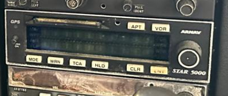

Training mock-up: This is not an exact software emulation and must not be used as an operating reference.
Verify real button sequences and approved functions against the installed aircraft documents and correct pilot guide.
GPS
SELF TEST COMPLETE
NAV 1 KMFV → KESN
BRG 324° DIS 43.2
GS 090KT ETE 0:29
STAR 5000
Simulation controls
The slider represents changing GPS groundspeed. Watch the recommended 3° descent rate update in the lesson panel.
View the installed unit photograph
